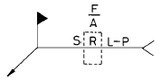
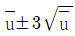
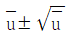
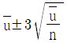
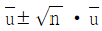

에너지관리기능장 (2002-07-21 기출문제)
1과목: 임의 구분
1. 항상 일정한 수압으로 급수할 수 있는 급수 방식은?
- 옥상 탱크식
- 직결 배관식
- 압력 탱크식
- 상향 배관식
(정답률: 88%)

2. 전열방식에 따른 과열기의 종류가 아닌 것은?
- 방사형
- 대류형
- 방사 대류형
- 평행 방사형
(정답률: 72%)
3. 다음 기체 중 가연성인 것은?
- CO2
- N2
- CO
- He
(정답률: 74%)
4. 실제 증발량 1300 kg/h, 급수온도 35 ℃, 전열면적 50 m2인 연관식 보일러의 전열면 환산 증발률은? (단, 발생 증기 엔탈피는 659.7 kcal/kg 이다.)
- 68 kg/m2
- 56 kg/m2
- 47 kg/m2
- 30 kg/m2
(정답률: 42%)
5. 고압기류분무식 버너의 공기 또는 증기의 압력은 몇 kg/cm2 정도인가?
- 2 ∼ 7 kg/cm2
- 8 ∼ 12 kg/cm2
- 15 ∼ 18 kg/cm2
- 20 ∼ 25 kg/cm2
(정답률: 66%)
6. 에너지이용합리화법상 소형 온수보일러란 전열면적과 최고사용압력이 얼마 이하인 보일러인가?
- 10 m2, 3.5 kg/cm2
- 14 m2, 5.5 kg/cm2
- 15 m2, 4.5 kg/cm2
- 14 m2, 3.5 kg/cm2
(정답률: 70%)
7. 보일러 1마력에 상당하는 증발량은?
- 15.65 kg/h
- 16.50 kg/h
- 18.65 kg/h
- 17.50 kg/h
(정답률: 82%)
8. 어떤 복수기의 진공도가 600 mmHg 이다. 절대압력은 얼마인가? (단, 표준대기압은 765 mmHg 이다.)
- 65 mmHg
- 160 mmHg
- 265 mmHg
- 320 mmHg
(정답률: 54%)
9. 차압식 유량계가 아닌 것은?
- 오벌 기어 유량계
- 벤츄리관 유량계
- 플로노즐 유량계
- 오리피스 유량계
(정답률: 64%)
10. 보일러 급수내관(內管)을 설치하는 목적과 무관한 것은?
- 급수를 얼마 정도라도 예열하기 위하여
- 냉수를 직접 보일러에 접촉시키지 않게 하기 위하여
- 보일러수의 농축을 막기 위하여
- 보일러수의 순환을 좋게 하기 위하여
(정답률: 59%)
11. 주원료에 따른 내화벽돌의 종류가 아닌 것은?
- 납석질
- 마그네시아질
- 반규석질
- 벤토나이트질
(정답률: 56%)
12. 보일러 제작 후 알카리 세관을 행할 때 사용하는 약품이 아닌 것은?
- 계면 활성제
- 인산(H3PO4)
- 가성소다(NaOH)
- 인산소다(Na3PO4)
(정답률: 58%)
13. 보일러 급수장치는 주펌프 세트 외에 보조펌프 세트를 갖추어야 하는데 관류 보일러의 경우 전열면적이 몇 m2이하 이면 보조펌프를 생략할 수 있는가?
- 12 m2
- 14 m2
- 50 m2
- 100 m2
(정답률: 71%)
14. 유류 버너 중 유량의 조절범위가 가장 큰 것은?
- 고압기류식 버너
- 저압공기식 버너
- 유압식 버너
- 회전식 버너
(정답률: 81%)
15. 액상식 열매체 보일러 및 온도 120 ℃ 이하의 온수발생 보일러에 설치하는 방출밸브 지름은?
- 15 mm 이상
- 20 mm 이상
- 25 mm 이상
- 32 mm 이상
(정답률: 54%)
16. 보일러를 장기간(6개월 이상) 사용치 않고 보존하는 경우 가장 좋은 보존 방법은?
- 보통 밀폐 보존법
- 보통 만수 보존법
- 소다 만수 보존법
- 석회 건조 보존법
(정답률: 86%)
17. 보일러 점화 시 발생하는 역화현상(逆火現像)을 방지하는 방법으로 가장 적절한 것은?
- 유압을 높인다.
- 연도 댐퍼를 닫는다.
- 슈트 블로우를 한다.
- 포스트 퍼지를 한다.
(정답률: 81%)
18. 보일러에서 간헐 분출할 경우의 주의사항으로 틀린 것은?
- 분출은 가급적 시동 후 부하가 가장 클 때 한다.
- 분출작업은 2대의 보일러를 동시에 해서는 안된다.
- 분출은 2명이 한 조가 되어 작업을 한다.
- 분출할 때는 절대로 다른 작업을 해서는 안된다.
(정답률: 91%)
19. 보일러 운전 시 프라이밍이나 포밍이 발생하는 경우가 아닌 것은?
- 수면과 증기 송출구의 거리가 가까울 때
- 동체 내의 수면이 지나치게 넓을 때
- 보일러수가 농축하여 불순물이 많을 때
- 주증기 밸브를 급격히 열었을 때
(정답률: 80%)
20. 일의 열당량(熱當量) 값 및 단위로 옳은 것은?
- 1/427 kcal/kg · m
- 1/427 kg · m/kcal
- 427 dyne/kg
- 427 kcal/kg
(정답률: 77%)
2과목: 임의 구분
21. 몰리에르(Mollier) 선도는 x축과 y축을 각각 어떤 양으로 하는가?
- x축 : 비체적, y축 : 온도
- x축 : 엔탈피, y축 : 엔트로피
- x축 :온도, y축 : 엔탈피
- x축 : 엔트로피, y축 : 온도
(정답률: 80%)
22. 물의 임계압력은 절대압력으로 몇 kg/cm2 인가?
- 374.15 kg/cm2
- 225.56 kg/cm2
- 647.3 kg/cm2
- 538 kg/cm2
(정답률: 54%)
23. 직경이 각각 10 cm 와 20 cm 로 된 관이 서로 연결되어 있다. 20 cm 관에서의 속도가 2 m/s 일 때 10 cm 관에서의 속도는?
- 1 m/s
- 2 m/s
- 6 m/s
- 8 m/s
(정답률: 55%)
24. 1 kg 의 습포화증기 속에 증기상(蒸氣相)이 x kg, 액상(液相)이 (1 - x) kg 포함되어 있을 때 습기도는?
- x – 1
- 1 – x
- x / 1 – x
- x
(정답률: 75%)
25. 랭킨사이클의 열효율을 크게 하는 방법으로 옳은 것은?
- 보일러 발생 증기의 초압을 높게 하고 초온을 낮게 한다.
- 발생 증기의 초압, 초온을 무두 높게 한다.
- 발생 증기의 초압, 초온을 모두 낮게 한다.
- 발생증기의 초압은 낮게 하고, 초온은 높게 한다.
(정답률: 62%)
26. 어떤 보일러 송풍기의 풍량이 3600 m3/min, 송풍압력이 35mmH2O, 효율이 0.62 이면, 이 송풍기의 소요동력은?
- 33.2 kW
- 53.5 kW
- 63.4 kW
- 87.6 kW
(정답률: 49%)
27. 보일러에서 증발과정의 변화는?
- 정적변화
- 등온, 정압변화
- 정압변화
- 단열변화
(정답률: 60%)
28. 물에 대하여 압력이 증가할 때 포화온도 및 증발열의 설명이 옳은 것은?
- 포화온도는 내려가고 증발열은 증가한다.
- 포화온도가 올라가고 증발열도 증가한다.
- 포화온도는 올라가고 증발열은 감소한다.
- 포화온도가 내려가고 증발열도 감소한다.
(정답률: 60%)
29. 동관의 이음 방법이 아닌 것은?
- 플라스턴 이음
- 플랜지 이음
- 용접 이음
- 납땜 이음
(정답률: 79%)
30. 부력을 이용하여 밸브를 개폐하는 트랩은?
- 벨로즈 트랩
- 디스크 트랩
- 오리피스 트랩
- 버킷 트랩
(정답률: 87%)
31. 증기배관의 신축 이음장치에서 가장 고장이 적고 고압에 잘 견디는 것은?
- 벨로즈형
- 단식 슬리브형
- 복식 슬리브형
- 루프형
(정답률: 85%)
32. KS 배관 재료 기호 중 STHA는?
- 보일러 열교환기용 합금강관
- 보일러 열교환기용 스테인레스강관
- 일반구조용 강관
- 보일러용 압력강관
(정답률: 75%)
33. 탄소강의 청열취성 온도 범위는?
- 100 ∼ 200 ℃
- 200 ∼ 300 ℃
- 400 ∼ 500 ℃
- 800 ∼ 1000 ℃
(정답률: 61%)
34. 특정열사용기자재 중 검사대상기기의 계속사용검사 신청은 유효기간 만료 며칠 전에 해야 하는가?
- 20일
- 30일
- 7일
- 10일
(정답률: 57%)
35. 보일러 분출장치의 설치 목적으로 잘못된 것은?
- 슬러지분을 배출, 스케일 부착을 방지한다.
- 관수의 신진대사를 원활하게 한다.
- 증기압력을 일정하게 유지한다.
- 관수의 불순물 농도를 한계치 이하로 유지한다.
(정답률: 70%)
36. 탄산 마그네슘(MgCO2) 보온재의 설명으로 잘못된 것은?
- 염기성 탄산 마그네슘에 석면을 8 ∼ 15 % 정도 혼합한 것이다.
- 안전사용 온도는 무기질 보온재 중 가장 높다.
- 석면의 혼합 비율에 따라 열전도율은 달라진다.
- 물반죽 또는 보온판, 보온통 형태로 사용된다.
(정답률: 71%)
37. 보일러 급수 중의 용존가스(O2, CO2)를 제거하는 방법으로 가장 적합한 것은?
- 석회소다법
- 탈기법
- 이온교화법
- 침강분리법
(정답률: 92%)
38. 용해 고형물을 제거하는 방법 중의 하나인 이온 교환법에 서 사용하는 재생제는?
- 탄산칼슘
- 수산화나트륨
- 산화칼슘
- 탄산나트륨
(정답률: 68%)
39. 보일러 동 내부에 점식을 일으키는 것은?
- 급수 중의 탄산칼슘
- 급수 중의 인산칼슘
- 급수 중에 포함된 공기
- 급수 중의 황산칼슘
(정답률: 81%)
40. 보일러 급수의 외처리 방법 중 물리적 처리 방법이 아닌 것은?
- 여과법
- 침강법
- 기폭법
- 석회 소다법
(정답률: 76%)
3과목: 임의 구분
41. 피복 아크 용접에서 자기 쏠림 현상을 방지하는 방법으로 옳은 것은?
- 용접봉을 굵은 것으로 사용한다.
- 접지점을 용접부에서 멀리한다.
- 용접 전압을 높여준다.
- 용접 전류를 높여준다.
(정답률: 87%)
42. 압력배관용 강관의 사용압력이 40 kg/cm2, 인장강도가 20kg/mm2 일 때의 스케줄 번호는? (단, 안전율은 4로 한다.)
- 60
- 80
- 120
- 160
(정답률: 62%)
43. 아래 용접기호에 대한 설명으로 틀린 것은?

- : 현장 용접
- S : 치수 또는 강도
- F : 표면 모양의 기호
- R : 루트 간격
(정답률: 66%)
44. 15 ℃, 15 kg/cm2 에서 아세톤 1 ℓ 에 대하여 아세틸렌 가스는 몇 ℓ 가 용해되는가? (단, 15 ℃, 1 kg/cm2에서 아세톤 1 ℓ 에 아세틸렌 25 ℓ가 용해된다.)
- 250 ℓ
- 375 ℓ
- 425 ℓ
- 480 ℓ
(정답률: 57%)
45. 보일러 내에 아연판을 설치하는 목적은?
- 비수작용 방지
- 스케일 생성 방지
- 보일러 내부부식 방지
- 포밍 방지
(정답률: 82%)
46. 보일러의 공기조절장치에 대한 설명으로 틀린 것은?
- 윈드박스(wind box) : 풍도로부터 공기를 받아들여 정압을 동압으로 바꾸어준다.
- 보염기(stabilizer) : 착화를 확실하게 하며 화염의 안정을 도모한다.
- 안내날개(guide vane) : 공기의 흐름을 균일한 선회류가 되도록 한다.
- 버너타일(burner tile) : 연료와 공기를 노내에 분사하기 위하여 노벽에 설치한 목(burner throat)을 구성하는 내화재로 착화와 화염이 안정되도록 한다.
(정답률: 66%)
47. 보일러수의 가성취화 현상을 방지하기 위하여 사용되는 청관제가 아닌 것은?
- 리그닌
- 질산나트륨
- 인산나트륨
- 탄산나트륨
(정답률: 28%)
48. 부정형 내화물에 해당되는 것은?
- 캐스터블 내화물
- 마그네시아 내화물
- 규석질 내화물
- 탄소 규소질 내화물
(정답률: 69%)
49. 에너지 사용량이 대통령이 정하는 기준량 이상이 되는 경우에는 신고하여야 한다. 이 때 신고사항이 아닌 것은?
- 전년도의 에너지 사용량 및 제품 생산량
- 당해 연도의 에너지 사용 예정량 및 제품생산 예정량
- 에너지사용 기자재의 현황
- 내년도의 에너지 사용량 및 제품 생산량
(정답률: 71%)
50. 코르니쉬 보일러(cornish boiler)에서 노통을 편심으로 설치하는 이유는?
- 보일러의 강도를 향상시키기 위함이다.
- 연소장치의 설치를 쉽게 하기 위함이다.
- 온도 변화에 따른 신축작용을 흡수하기 위함이다.
- 보일러수의 순환을 좋게 하기 위함이다.
(정답률: 75%)
51. 온수보일러 설치 · 시공 기준상 온수보일러의 용량이 50000 kcal/h 일 때 급탕관의 크기는?
- 25 mm 이상
- 20 mm 이상
- 15 mm 이상
- 10 mm 이상
(정답률: 26%)
52. 보일러에서 그을음 불어내기(soot blow)를 할 때 주의사항으로 틀린 것은?
- 그을음 불어내기를 하기 전에 드레인(drain)을 충분히 한다.
- 그을음 불어내기 관을 동일 장소에서 오래 동안 작용시키지 않는다.
- 댐퍼의 개도를 늘리고 통풍력을 적게 한다.
- 흡입 통풍기가 있을 경우 흡입통풍을 늘려서 한다.
(정답률: 80%)
53. 다음 중 보일러 관수의 탈산소제가 아닌 것은?
- 아황산소다
- 암모니아
- 탄닌
- 히드라진
(정답률: 91%)
54. 관의 지지장치에서 이어(ear), 슈(shoe) 등은 어떤 종류의 지지장치에 해당되는가?
- 서포트(support)
- 행거(hanger)
- 레스트레인트(restraint)
- 브레이스(brace)
(정답률: 65%)
55. 공급자에 대한 보호와 구입자에 대한 보증의 정도를 규정해 두고 공급자의 요구와 구입자의 요구 양쪽을 만족하도록 하는 샘플링 검사방식은?
- 규준형 샘플링 검사
- 조정형 샘플링 검사
- 선별형 샘플링 검사
- 연속생산형 샘플링 검사
(정답률: 73%)
56. 표는 어느 회사의 월별 판매실적을 나타낸 것이다. 5개월 이동평균법으로 6월의 수요를 예측하면?
- 150
- 140
- 130
- 120
(정답률: 89%)
57. u 관리도의 공식으로 가장 올바른 것은?




(정답률: 75%)
58. 도수분포표를 만드는 목적이 아닌 것은?
- 데이터의 흩어진 모양을 알고 싶을 때
- 많은 데이터로부터 평균치와 표준편차를 구할 때
- 원 데이터를 규격과 대조하고 싶을 때
- 결과나 문제점에 대한 계통적 특성치를 구할 때
(정답률: 52%)
59. 설비의 구식화에 의한 열화는?
- 상대적 열화
- 경제적 열화
- 기술적 열화
- 절대적 열화
(정답률: 58%)
60. 모든작업을 기본동작으로 분해하고 각 기본동작에 대하여 성질과 조건에 따라 정해놓은 시간치를 적용하여 정미시간을 산정하는 방법은?
- PTS법
- WS법
- 스톱워치법
- 실적기록법
(정답률: 81%)